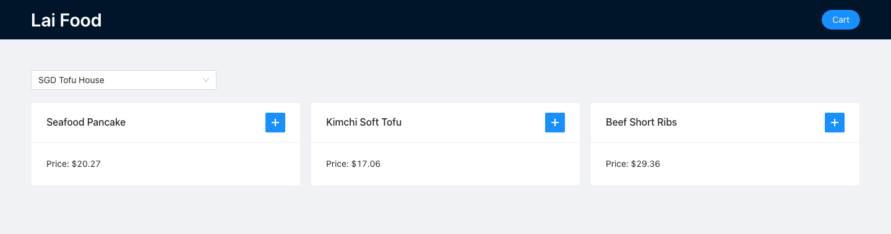

OnlineOrder
A full-stack online food ordering platform with secure authentication, restaurant and menu browsing, cart management, checkout flows, and cloud deployment.
- Built CRUD REST APIs and layered controller, service, and repository architecture.
- Integrated PostgreSQL on AWS RDS with Spring Data JDBC and Spring Security.
- Shipped a React + Ant Design frontend and deployed with AWS App Runner.